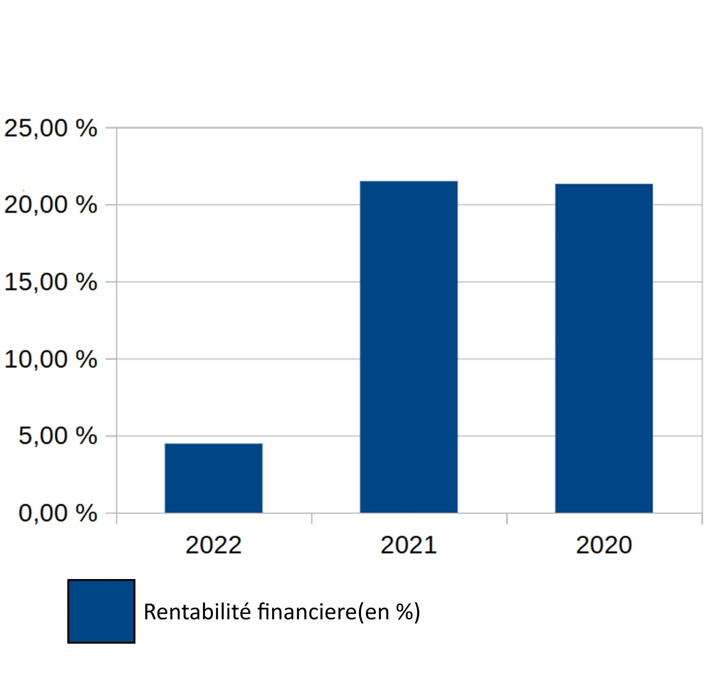
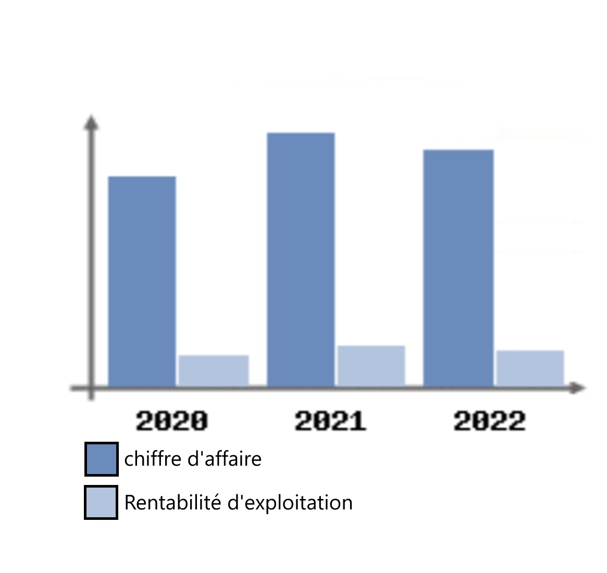
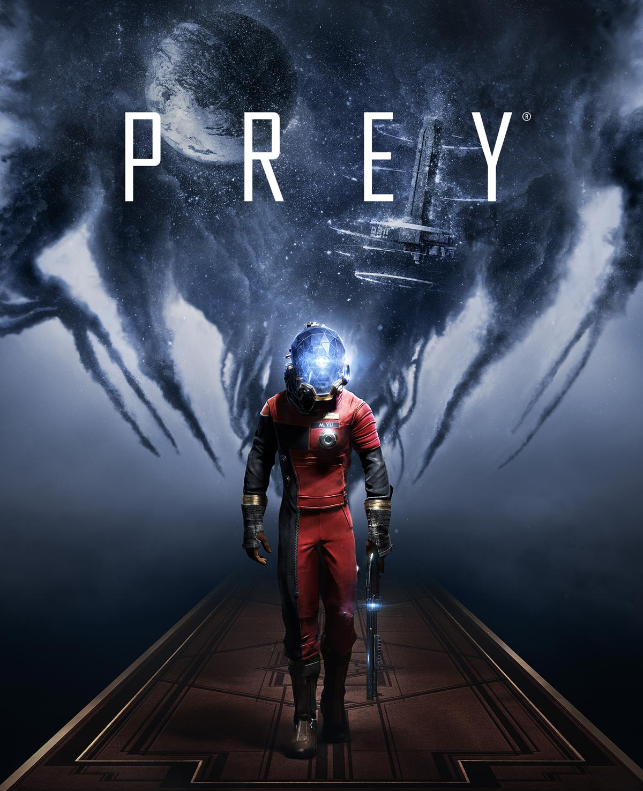

ECONOMIE
ATTENTION : il est important de noter que toutes les informations présentent sur cette page n'ont pas ete mises a jour depuis 2022.
La société Arkane Studios a été créée en octobre 1999, et elle dispose d’un capital social de 181 k€. Elle a réalisé un chiffre d'affaires de 17 M€ en 2020 en s'appuyant sur un effectif de plus de 140 personnes.
La rentabilité financiere de l'entreprise a diminué depuis 2020 en passant de 21,32% en 2020 a 4.48% en 2022 malgré une tres legere hausse en 2021 a 21,50%. dans l'ensemble, l'année 2022 est une année moins bonne que les autres au niveau des performances pour le studio lyonnais comme nous pouvons le voir avec la baisse de sa capacité d'autofinancement de 31,08% en 2021 a 10,02% en 2022 ou encore la diminution de la rentabilité nette finale qui passe de 27,64% en 2021 a 6,52% en 2022


Ce graphe permet de mesurer l'évolution du chiffre d'affaires et de la rentabilité de l'entreprise.
La rentabilité est mesurée gr?ce à l'Excédent Brut d'Exploitation (EBE) qui, à la différence du Résultat d'Exploitation,
ne tient pas compte des choix de gestion de l'entreprise (dotations/reprises aux amortissements et transferts de charges).
ECOLOGIE
Partage des idéologie et incite ses joueurs a recycler et tente de les sensibiliser a cette idee de recyclage notamment grace a son jeu PREY dans lequel les joueurs peuvent recycler n'importe quel element a n'importe quel moment. Integrer des notions telles que celles ci dans un jeu qui n'a rien a voir avec est une tres bonne idee qui peut sensibiliser beaucoup de joueurs peut importe leur age.
